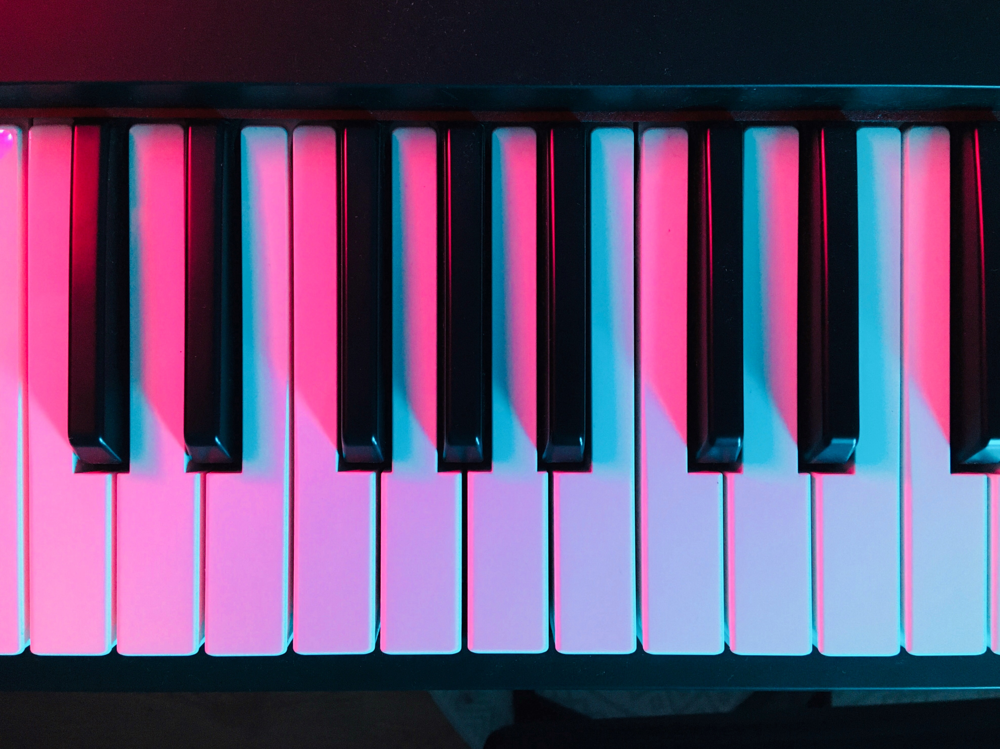
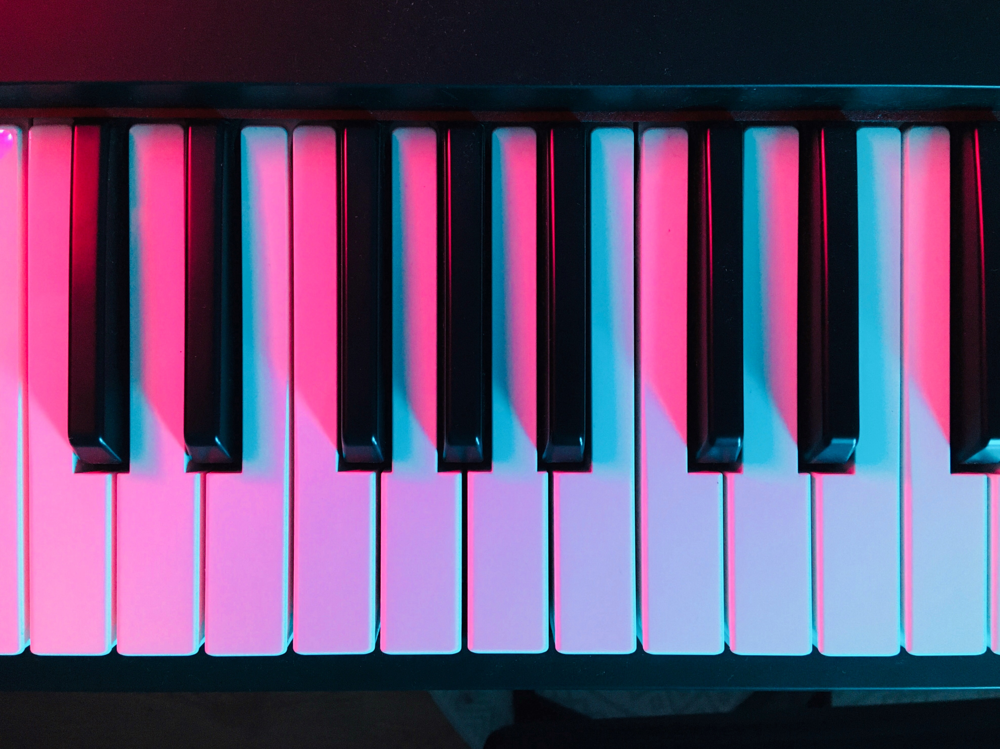
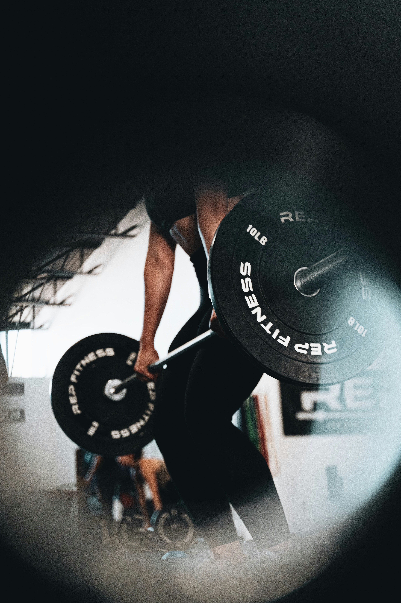
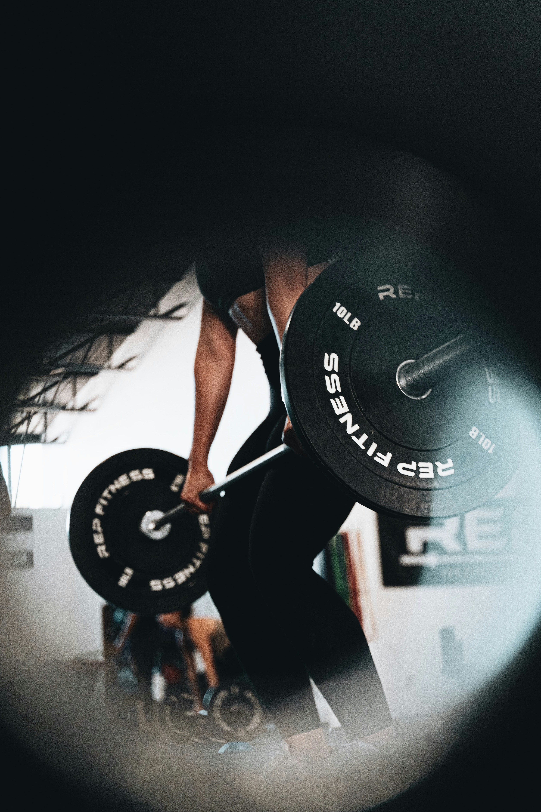

ANNIE WÅGSTRÖM
portfolio
 

One of my greates gold stars in life is music. I put music on more often than I clean my apartment. Whatever mood I'm in I put music on. Music was the only grade I ever got the highest grade on in school. I love going to music events, concerts and whatever event that includes music, clubs and so on. Except for listening to music, I also like playing instruments, specificly the piano, I try to be good at playing the guitar as well, but that to be honest, needs a little bit more practise. I love singing as well.
The second gold star in life is fitness and sports. The feeling of seeing small results after a gym workout, the feeling of being strong as well as it's fun. Weightlifting is my absolute favorite. When I were younger, I played in a soccer team, Nässjö FF, and also a basketball team, Nässjö Basket. I really enjoy team sports rather than competing alone. I really wish I was a player in a hockey team, that would be awesome. There's a lot of things you wish you did as a kid. I also wish I could ride the snowboard, I've tried once, couldn't move 1 meter and I fell constantly.. sadly. But some beautiful day I will master the snowboard. In other words, I love being active. I would also say I'm an extrovert person who hate being alone for more than 2-3 days and love going on spontanious trips to everywhere and nowhere.
 
